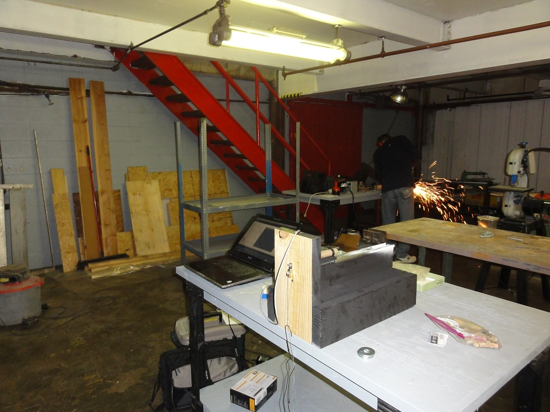
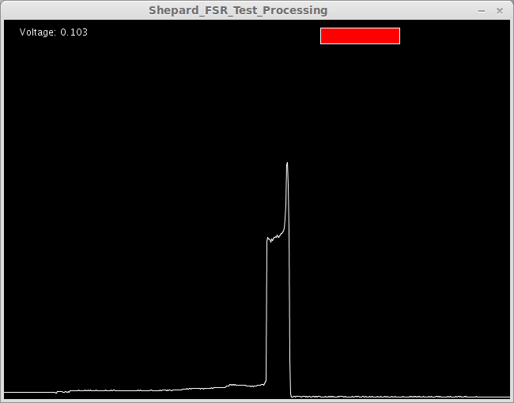

Forums » Discussion »
First integration test has promising results
Added by J. Simmons about 10 years ago
Jeremy and I met at Club Cyberia, a Maker Space in Indianapolis, today. Our plan was to introduce the Shepard Test Stand to more makers, do some initial integration of the FSR thrust sensor, and to give the integrated test stand its first test with data collection as part of the hardware hand off. The FSR did give us some problems (under static load it has a slight upward drift, making it difficult to calibrate with weights hung off of the pulley). Here's a pic of our setup at Club Cyberia.

We decided to do a test firing with data collection to see if the FSR difficulties presented themselves during operation. The results were much more promising. Here is the video of the test firing. It was great to be able to share the test with the members of Club Cyberia.
So, how did the data collection go? Take a look for yourself. We got a very typical thrust vs time curve, just reversed because of the plot settings. You can compare the image below to the official data from Estes. We will do some calibration work on the FSR based on the manufacturer's specs and conduct follow up testing to determine if the FSR will really work or if we need to investigate other force sensor options.

Special thanks to Club Cyberia for hosting this weekend's work!!
Shepard_FSR_Integration_Test_Results.png (11.8 kB)
{kind=link}
static_testing_of_shepard_FSR.jpg (213.9 kB)
{kind=link}
Replies (1)
RE: First integration test has promising results - Added by Jeremy Wright about 10 years ago
Here are the next steps based on this round of integration testing.
1. Create a more solid version of the circuit (it's just on a breadboard now). We were seeing some drift (slowly increasing value at what should have been steady state) with the sensor and we want to make sure it wasn't due to the prototype circuit's setup.
2. Apply the manufacturer's info to creating a calibration for the FSR (Force Sensing Resistor) sensor.
3. Make the software more complete with scales on both the X and Y axes, with better scaling for the X (time) axis so the force curve is not so compressed.
4. Have time 0 start on the left hand side of the chart so our curve matches the format Estes has in their documentation.
5. Add a text field for the max thrust value recorded.
6. Add CSV file output so that we can save the thrust curves for later analysis.
Even if we don't end up using the FSR we'll be able to use most of the code written with a load cell setup.
(1-1/1)